Operating Systems
Two and more level paging, segmentation and more
Ahmad Yoosofan
University of Kashan
Frame Size(I)
کوچک یا بزرگ بودن اندازهٔ صفحهها (همان قابهای حافظه) بر روی موضوعهای گوناگونی اثر دارد
1
- Max memory supported : 64 byte = 2 ^ 6
- frame size = page table 2 byte
- 2 ^ 6 / 2 ^1 = 2 ^ 5 = 32
- ?
2
- Max memory supported : 64 byte = 2 ^ 6
- frame size = page table 4 byte
- 2^6 / 2^2 = 2^4 = 16
- ?
3
- Max memory supported : 64 byte = 2 ^ 6
- frame size = page table 8 byte
- 2^6 / 2^3 = 2^3 = 8
- ? , Maximum Number of Processes
Frame Size(II)
1
- 32 bit address
- 1024 size of frame?
- 32 - 10 = 22
- 2^22 Frame
- 2^22 page table entry
- Problem ?
2
- 32 bit address
- 2^20 size of frame?
- 32 - 20 = 12
- 2^12 = 4096 Frame
- ? , Maximum Number of Processes
آدرسدهی در صفحهبندی دو سطحی
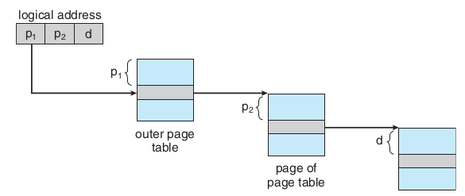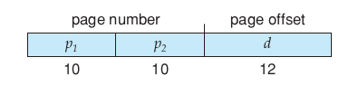
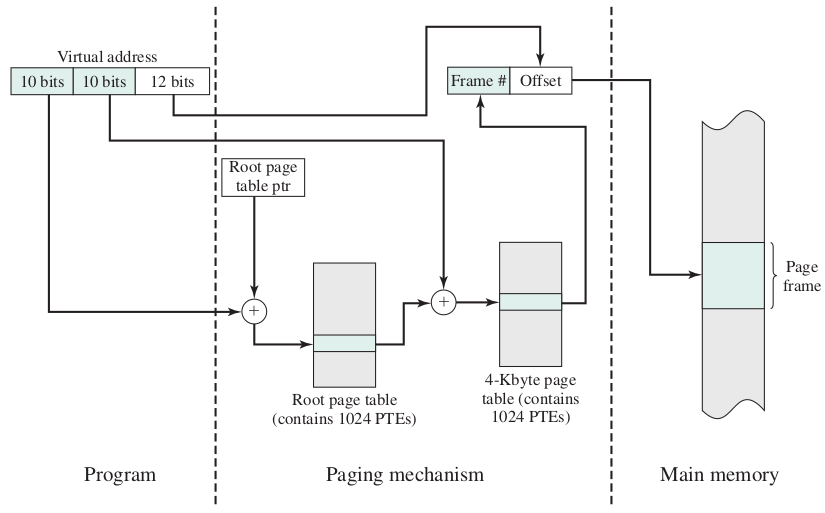
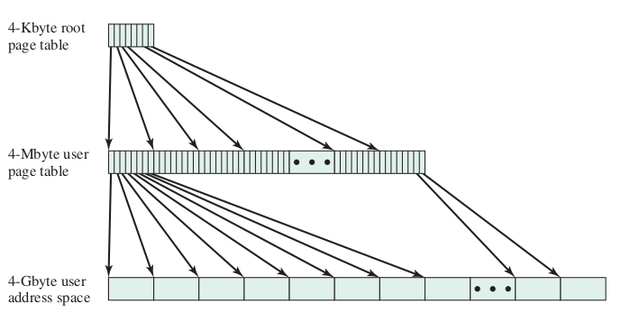
صفحهبندی دو سطحی ۶۴ بیتی
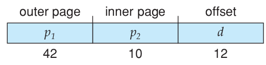
صفحهبندی سه سطحی ۶۴ بیتی
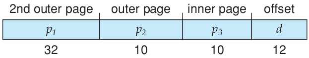
صفحهبندی با جدول صفحهٔ معکوس
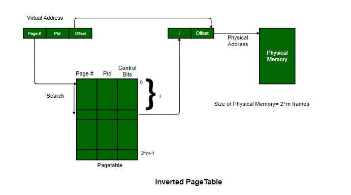
صفحهبندی با جدول صفحهٔ معکوس با تابع درهمسازی
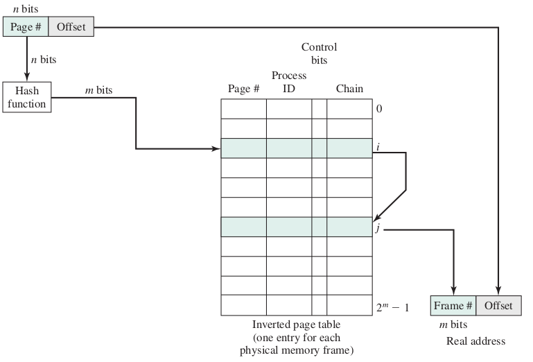
Windows 10 Inverted Page Table on Intel Itanium 64 bit platform
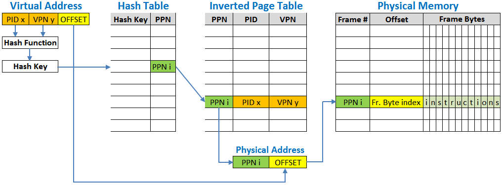قطعهبندی (segmentation)
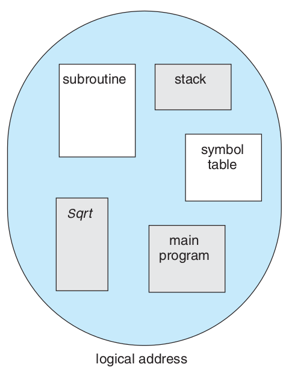
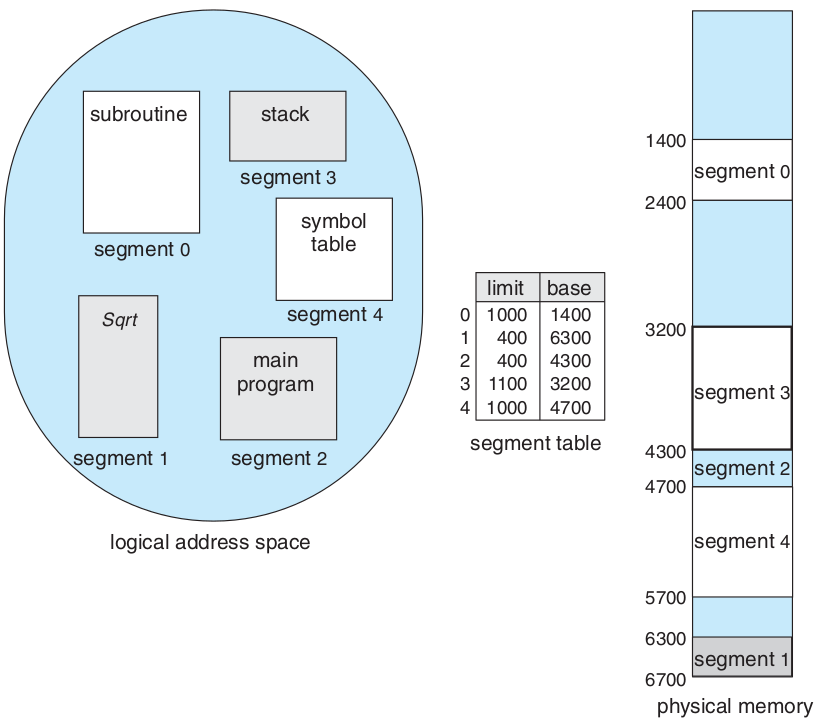
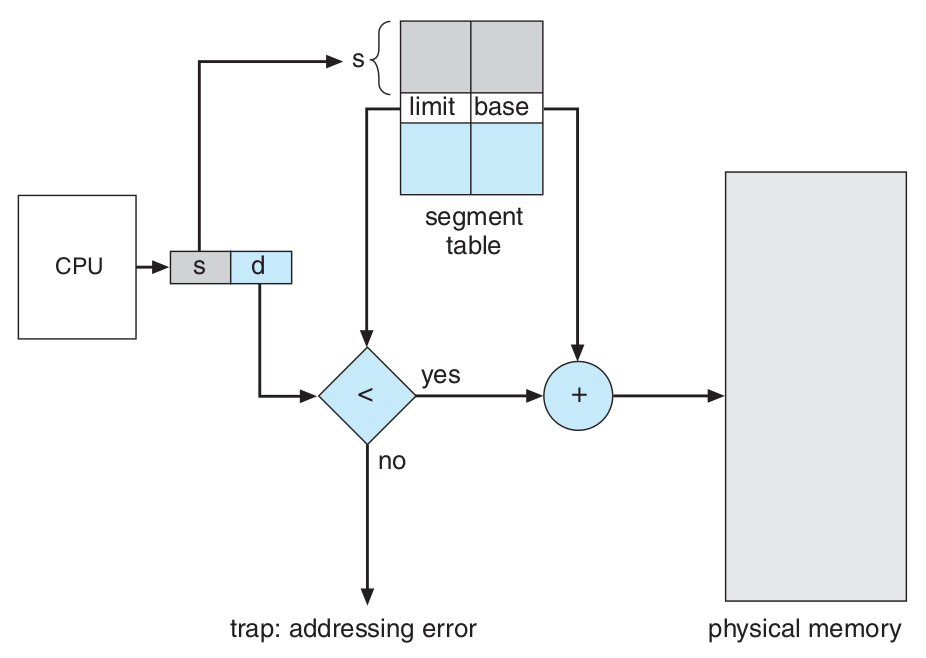
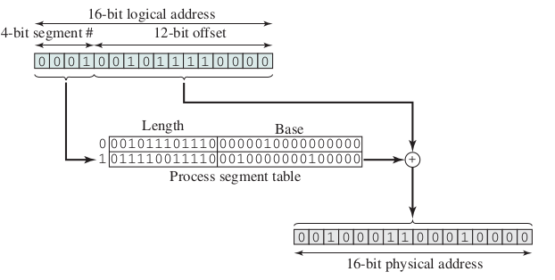
اشتراک گذاری در قطعهبندی
Sharing segments
ترکیب قطعهبندی و صفحهبندی
مانند صفحهبندی دو سطحی با این تفاوت که در سطح یکم قطعهبندی انجام میشود و در سطح دوم صفحهبندی انجام میشود.
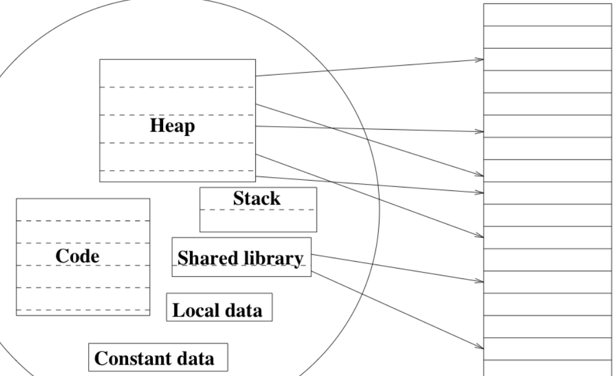
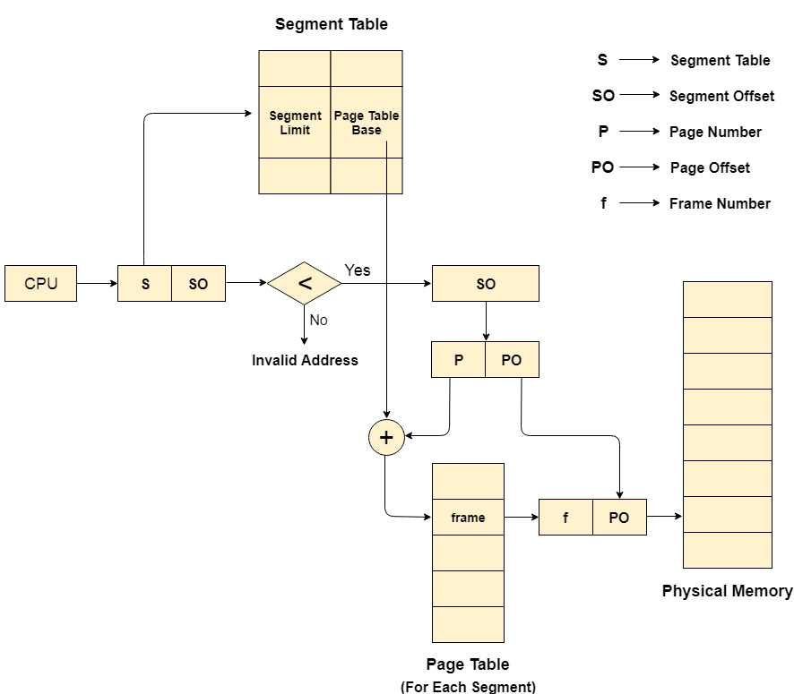
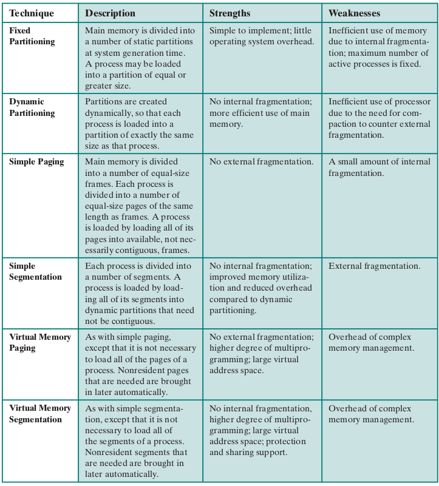
ساختار حافظهٔ قطعهبندی شده در پردازندههای اینتل ۳۲ بیتی (IA32)
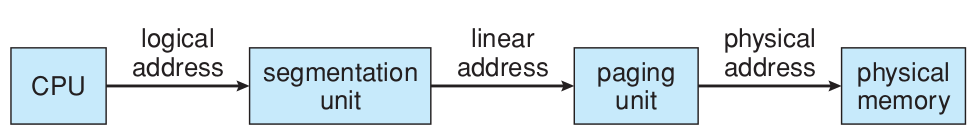
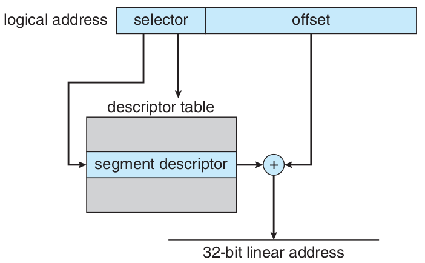
IA32 intel
- بیشترین حافظهای که میتواند پشتیبانی کند: 4GB
- بیشترین تعداد قطعه در یک فرآیند: 16KB
- بیشترین تعداد قطعهٔ اختصاصی برای یک فرآیند: 8KB برای دسترسی این بخش local descriptor table ( LDT ) به کار برده میشود.
- بیشترین تعداد قطعهٔ اشتراکی برای یک فرآیند با دیگر فرآیندها: 8KB برای دسترسی به این بخش global descriptor table ( GDT ) به کار برده میشود.
بخش انتخاب کنندهٔ واحد قطعهبندیشمارهٔ قطعه | اختصاصی یا اشتراکی | حفاظت |
|---|
13 | 1 | 2 |
ساختار حافظهٔ صفحهبندی شده در پردازندههای اینتل ۳۲ بیتی (IA32)
صفحهبندی ۴ کیلوبایتیجدولِ صفحهٔ یکم | جدولِ صفحهٔ دوم | جابجایی |
|---|
۱۰ | ۱۰ | ۱۲ |
صفحهبندی ۴ مگابایتیجدولِ صفحه | جابجایی |
|---|
۱۰ | ۲۲ |
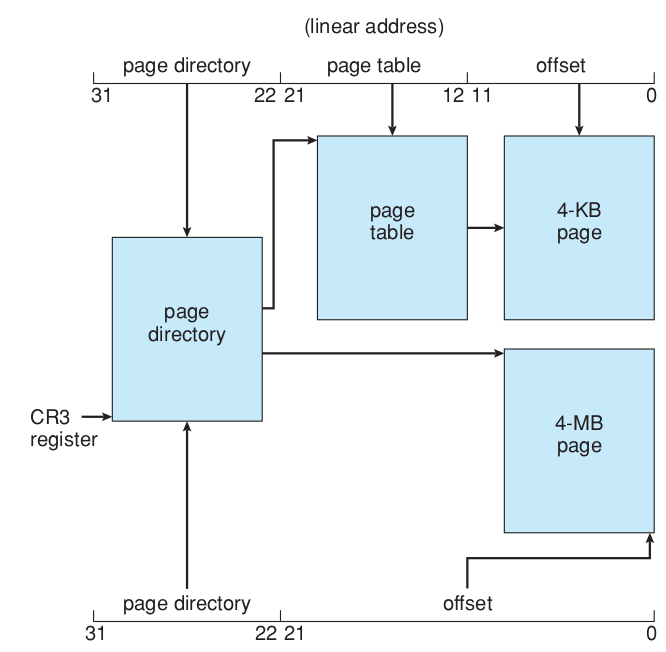
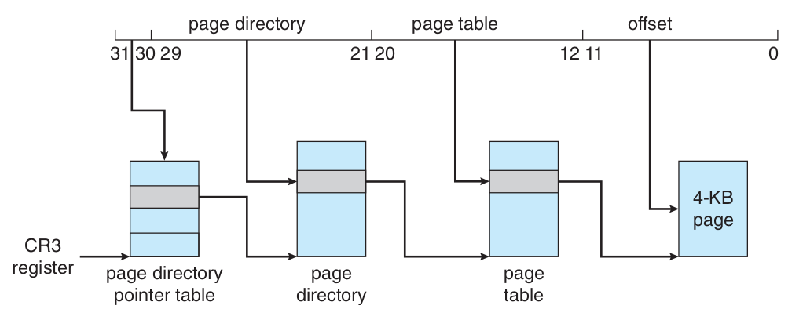
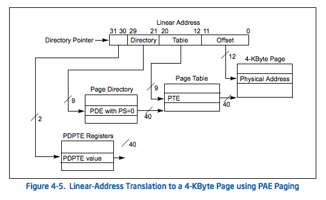
ساختار حافظه در پردازندههای «اِ اِم دی» ۶۴ بیتی (AMD64 یا x86_64 )
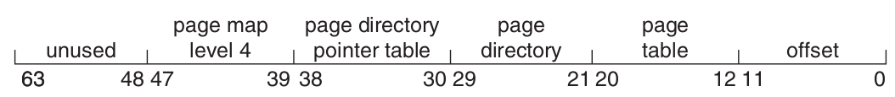
ساختار حافظه در پردازندههای «آرم» ۳۲ بیتی (ARM32)
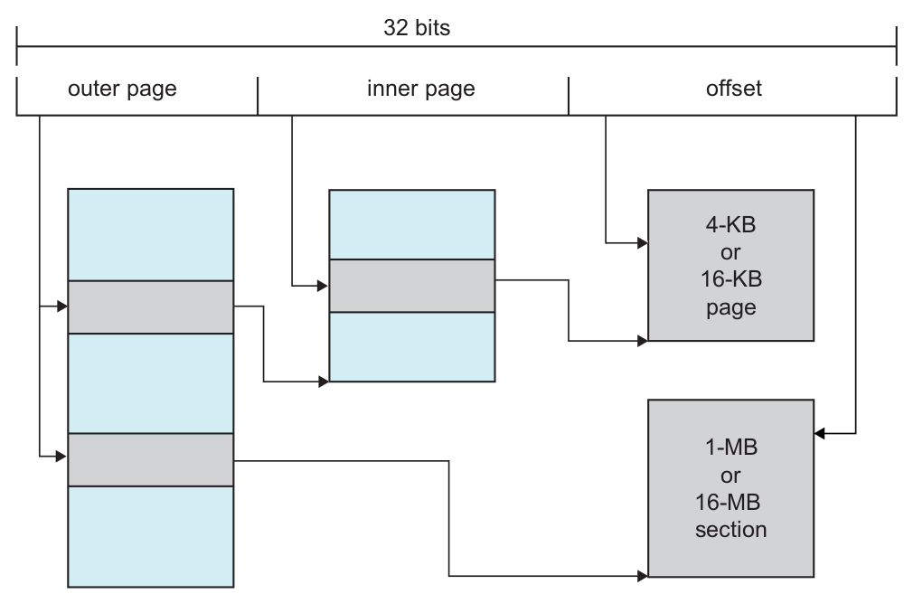
Page Translation for 4MB and 4KB Page Sizes
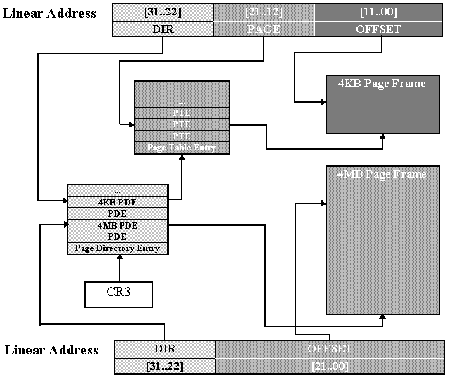Linux Memory Mangement
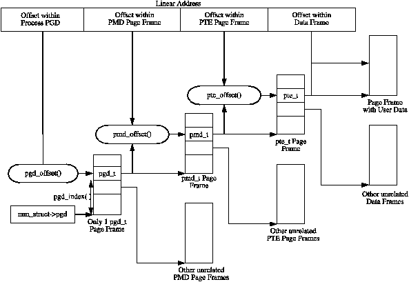ساختار حافظهٔ قطعهبندی شده در پردازندههای اینتل ۳۲ بیتی (IA32)
IA32 intel
- بیشترین حافظهای که میتواند پشتیبانی کند: 4GB
- بیشترین تعداد قطعه در یک فرآیند: 16KB
- بیشترین تعداد قطعهٔ اختصاصی برای یک فرآیند: 8KB برای دسترسی این بخش local descriptor table ( LDT ) به کار برده میشود.
- بیشترین تعداد قطعهٔ اشتراکی برای یک فرآیند با دیگر فرآیندها: 8KB برای دسترسی به این بخش global descriptor table ( GDT ) به کار برده میشود.
بخش انتخاب کنندهٔ واحد قطعهبندیشمارهٔ قطعه | اختصاصی یا اشتراکی | حفاظت |
|---|
13 | 1 | 2 |
ساختار حافظهٔ صفحهبندی شده در پردازندههای اینتل ۳۲ بیتی (IA32)
صفحهبندی ۴ کیلوبایتیجدولِ صفحهٔ یکم | جدولِ صفحهٔ دوم | جابجایی |
|---|
۱۰ | ۱۰ | ۱۲ |
صفحهبندی ۴ مگابایتیجدولِ صفحه | جابجایی |
|---|
۱۰ | ۲۲ |
ساختار حافظه در پردازندههای «اِ اِم دی» ۶۴ بیتی (AMD64 یا x86_64 )
ساختار حافظه در پردازندههای «آرم» ۳۲ بیتی (ARM32)
Page Translation for 4MB and 4KB Page Sizes
Linux Memory Mangement
{kind=link}
{kind=link}
{kind=link}
{kind=link}
{kind=link}
{kind=link}
{kind=link}
{kind=link}